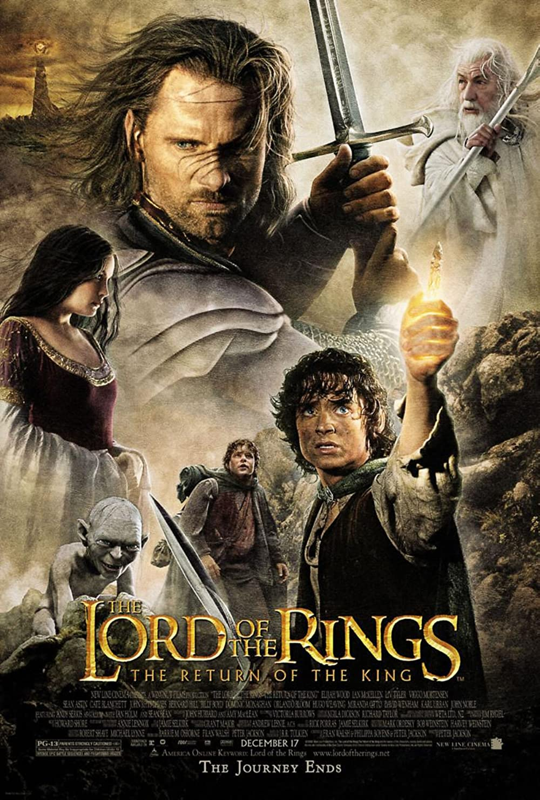

Introduction
The purpose of this list is to explore some of the most impactful movies in my life. It is in no particular order and is limited to 10 films so that it won't go on forever. Please Enjoy!

1. Inception (2010)
“You're waiting for a train. A train that will take you far away. You know where you hope this train will take you, but you can't know for sure. Yet it doesn't matter...Because you'll always be together.”
Inception is Christopher Nolan’s masterpiece. In a career that is not lacking in outstanding movies, this film stands out the most. An incredibly detailed and perfectly directed movie, Inception pushed the boundaries of what I thought that Film could be. I watched this film at the age of 10 and thought that it couldn’t get any better, that I had reached the peak of what film could be.
While that is an obviously naive perspective on film, however, it has persevered through the years to keep a constant spot on my all-time favorites. Nolan is one of my personal favorite directors and this film personifies everything that I love about him.
This film is an edge-of-your-seat-thriller and one that does not disappoint. The acting is top-notch, the visual effects are masterful, to say the least, and the story is complex enough to warrant repeat viewing, but not too complex to discourage viewers.
All-in-all, Nolan gave us a rare gift with this film; an action thriller that will make you question your reality, and I will be forever grateful for it.

2. Everything Everywhere All At Once (2022)
“So, even though you have broken my heart yet again, I wanted to say, in another life, I would have really liked just doing laundry and taxes with you.”
Oh boy, this movie sometimes feels like watching an acid trip. A very recent addition to this list, the Daniels' crazy multiverse movie means a lot to me for different reasons. While Inception pushed the boundaries of what I thought Film could be, Everything Everywhere All At Once literally pushed the boundaries of what Film could be.
An absolute assault to the senses, this film is an experience to behold. I vividly remember watching this movie with my sister being absolutely bewildered, laughing our heads off, and bawling our eyes out at multiple points during this movie.
A refreshingly original movie, this movie is deeply emotional, and features an excellent cast. An especially charming Ke Huy Quan as the lovable Waymond is one of the standouts of the Oscar-winning cast. This film has a very special place in my heart as one of my favorite bonding experiences with my younger sister.
Who knew that a film about a multiversal journey of an immigrant woman and her family just trying to get an audit done could have affected me as much as it did.

3. Spirited Away (2001)
“Once you meet someone, you never really forget them. It just takes a while for your memory to come back to you”
You will begin to see a theme throughout this list, which is that many of these movies are my favorites of a specific genre. In this case, I had to pick my favorite Film from a specific studio. Studio Ghibli is one of my all-time favorite production companies and Hayao Miyazaki is another of my favorite directors.
Miyazaki's "Spirited Away" is a breathtaking masterpiece of animation that tells the story of a young girl named Chihiro who finds herself trapped in a mysterious and magical world. The film's stunning visuals, imaginative characters, and heartfelt storytelling make it a true cinematic gem that has captivated audiences of all ages.
One of the film's greatest strengths is its attention to detail. From the lush landscapes to the intricately designed creatures that inhabit the spirit world, every frame of "Spirited Away" is a work of art.
The animation is fluid and expressive, bringing the characters to life in a way that is both realistic and fantastical. Joe Hisaishi’s score is also beautiful and perfectly fits the film. This movie holds a special place in my heart.

4. Star Wars: Episode V - The Empire Strikes Back (1980)
“No... I am your father”
It would not be a stretch to say that Star Wars was the entire basis of my life growing up. I was wholeheartedly in love with this series. What might you ask started this love? The Empire Strikes Back. This movie was so cool to me. It singlehandedly started a decade-long near-obsession.
Considered one of the greatest sequels of all time, What sets "The Empire Strikes Back" apart from other blockbusters is its depth and complexity. The film explores themes of identity, destiny, and the nature of good and evil, adding a level of philosophical depth that is often missing from mainstream cinema.
Overall, "The Empire Strikes Back" is a true cinematic classic that stands the test of time. Its memorable characters, groundbreaking visuals, and philosophical themes make it a film that is both entertaining and thought-provoking, appealing to fans of all ages and backgrounds.

5. Singing In The Rain
“Well, we movie stars get the glory. I guess we have to take the little heartaches that go with it. People think we lead lives of glamour and romance, but we're really lonely - terribly lonely.”
This movie was a large aspect of my childhood. We would watch this movie almost ever Sunday, and I had every song memorized. This is an example of as close to a perfect film as you can possibly get. The film's greatest strength is its musical numbers, which are exuberant, colorful, and filled with infectious energy. The title song, "Singing in the Rain," has become an iconic piece of pop culture, and other songs like "Make 'Em Laugh" and "Good Morning" are equally memorable.
The film's performances are also top-notch, with Gene Kelly leading the way as the charismatic and talented leading man. Debbie Reynolds and Donald O'Connor provide excellent support as his co-stars, bringing humor and heart to their roles.
Beyond its musical numbers and performances, "Singing in the Rain" is also a witty and insightful look at the early days of Hollywood and the film industry. The film's satirical take on the movie business adds depth and nuance to the story, making it a film that is both entertaining and thought-provoking.
Overall, "Singing in the Rain" is a joyous celebration of music, dance, and the magic of cinema. It’s infectious energy and timeless appeal make it a film that can be enjoyed by audiences of all ages and backgrounds, cementing its status as a true classic of the musical genre.

6. The Dark Knight
“You either die a hero or live long enough to see yourself become the villain.”
"The Dark Knight" is a gripping and intense superhero film that tells the story of Batman's battle against the Joker, a deranged criminal mastermind who threatens to destroy Gotham City. Directed by Christopher Nolan and released in 2008, the film features a standout performance by the late Heath Ledger as the Joker.
The film's greatest strength is its complexity, delving into themes of chaos, morality, and the nature of heroism. The script is smart and layered, with sharp dialogue and a suspenseful plot that keeps the audience on the edge of their seats. The performances in the film are also exceptional, with Christian Bale delivering a nuanced and intense portrayal of Batman, and Ledger giving one of the most memorable performances in cinema history as the Joker. The supporting cast, including Aaron Eckhart and Gary Oldman, is also top-notch.
Visually, "The Dark Knight" is stunning, with dark and gritty cinematography that perfectly captures the film's brooding and intense tone. The action sequences are expertly choreographed and executed, making for thrilling and unforgettable moments on screen.
Overall, "The Dark Knight" is a triumph of the superhero genre, combining gripping storytelling, powerful performances, and stunning visuals to create a film that is both entertaining and thought-provoking. Its impact on popular culture cannot be overstated, making it a true cinematic classic.

7. The Lord of The Rings: The Return of the King
“Here at last, on the shores of the sea…comes the end of our Fellowship. I will not say do not weep, for not all tears are an evil.”
"The Lord of the Rings: The Return of the King" is the epic and triumphant conclusion to the beloved trilogy directed by Peter Jackson. Released in 2003, the film picks up where the previous installment left off, with the final battle between good and evil looming over Middle-earth.
The film's greatest strength is its stunning visuals and masterful storytelling, which bring J.R.R. Tolkien's rich and complex world to life on the big screen. The film's sweeping landscapes, intricate costumes, and breathtaking special effects create a sense of epic grandeur that is awe-inspiring.
The performances in the film are also exceptional, with the ensemble cast delivering some of their best work in the series. Viggo Mortensen shines as the heroic Aragorn, while Elijah Wood and Sean Astin deliver moving and heartfelt performances as Frodo and Sam, respectively. The film's emotional depth is another standout feature, with themes of sacrifice, loyalty, and redemption explored in powerful and poignant ways. The film's climax is a stirring and unforgettable moment that leaves a lasting impact on the viewer.
Overall, "The Lord of the Rings: The Return of the King" is a triumph of cinema, combining stunning visuals, powerful performances, and a gripping story to create a film that is both entertaining and emotionally resonant. It's a fitting and satisfying conclusion to one of the most beloved trilogies in film history, cementing its status as a true cinematic classic.

8. Django Unchained
“Normally, Monsieur Candie, I would say "Auf wiedersehen." But since what "auf wiedersehen" actually means is 'till I see you again', and since I never wish to see you again, to you sir, I say: 'goodbye'.”
"Django Unchained" is a visceral and unapologetic Western film by writer and director Quentin Tarantino. Released in 2012, the film tells the story of Django, a former slave turned bounty hunter, as he seeks to rescue his wife from a brutal plantation owner.
The film's greatest strength is its bold and unflinching approach to its subject matter, tackling issues of slavery, racism, and violence head-on. Tarantino's signature style is on full display, with sharp dialogue, graphic violence, and a stylized aesthetic that sets it apart from other Westerns.
The performances in the film are also exceptional, with Jamie Foxx delivering a powerful and nuanced portrayal of Django, and Christoph Waltz stealing the show as the charming and lethal Dr. King Schultz. Leonardo DiCaprio is also a standout as the sadistic and cruel plantation owner Calvin Candie. Despite its heavy subject matter, "Django Unchained" is also a highly entertaining film, with a thrilling plot and plenty of memorable moments. The film's mix of humor and violence, as well as its unique blend of genres, makes it a true standout in the Western genre.
Overall, "Django Unchained" is a bold and unforgettable film that tackles the difficult subject matter with style and substance. Its exceptional performances, gripping plot, and fearless approach to storytelling make it a true masterpiece of modern cinema.

9. Monty Python And The Holy Grail
“I don’t want to talk to you no more, you empty headed animal food trough water! I fart in your general direction!”
"Monty Python and the Holy Grail" is a timeless and irreverent comedy film from the legendary British comedy troupe, Monty Python. Released in 1975, the film is a parody of the Arthurian legend, following King Arthur and his knights as they embark on a quest for the Holy Grail.
The film's greatest strength is its unique brand of humor, which is both absurd and witty. Monty Python's trademark style of comedy is on full display, with clever wordplay, slapstick humor, and anachronistic gags that subvert expectations. The performances in the film are also exceptional, with the cast of Python regulars delivering memorable and hilarious performances. Graham Chapman shines as King Arthur, while John Cleese steals the show as the hilariously arrogant Sir Lancelot.
Visually, "Monty Python and the Holy Grail" is also impressive, with a low-budget aesthetic that adds to the film's charm. The film's iconic scenes, such as the Knights Who Say Ni and the Black Knight, have become pop culture touchstones.
Overall, "Monty Python and the Holy Grail" is a hilarious and unforgettable comedy film that has stood the test of time. Its unique brand of humor, memorable performances, and iconic moments make it a true classic of the genre, beloved by audiences of all ages.

10. Ratatouille
“Not anyone can become a great artist, but a great artist can come from anywhere.”
"Ratatouille" is a heartwarming and visually stunning animated film by Pixar. Released in 2007, the film tells the story of Remy, a rat with a passion for cooking, who teams up with a young chef to create culinary masterpieces in a Parisian restaurant.
The film's greatest strength is its beautiful animation, which captures the vibrant and bustling atmosphere of Paris. The attention to detail in the food and cooking scenes is particularly impressive, with each dish looking delicious enough to eat. The voice performances in the film are also exceptional, with Patton Oswalt delivering a charming and likable portrayal of Remy, and Brad Garrett providing plenty of laughs as the gruff and bumbling Chef Skinner.
At its core, "Ratatouille" is a story about pursuing your dreams, no matter how unlikely they may seem. It's a message that is delivered with heart and sincerity and one that is sure to resonate with audiences of all ages.
Overall, "Ratatouille" is a delightful and charming film that showcases Pixar's talent for storytelling and animation. Its beautiful visuals, memorable characters, and uplifting message make it a true gem in the animated film canon.